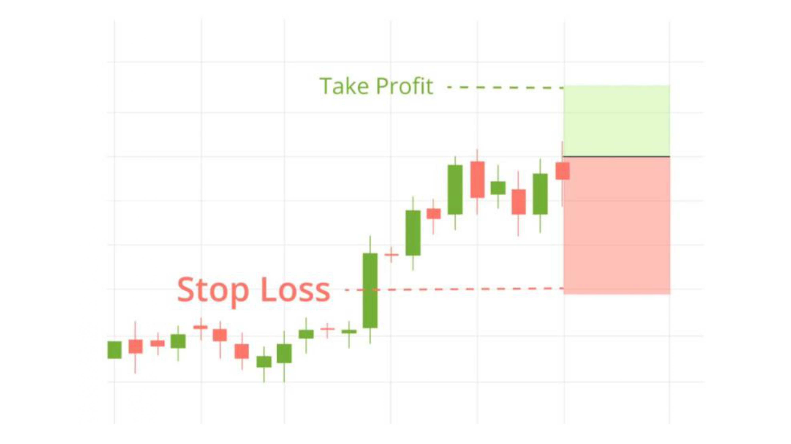

Почему это самый важный урок
Трейдеры теряют деньги не потому, что плохо анализируют графики. А потому, что не умеют управлять рисками. Можно ошибаться в 60% сделок и при этом быть прибыльным — если правильно управлять рисками. И наоборот, можно угадывать в 90% сделок и потерять всё из-за одной неудачной позиции.
Стоп-лосс
Стоп-лосс (SL) — это ордер, который автоматически закрывает сделку при достижении определённой цены. Он ограничивает ваш убыток.
Правила стоп-лосса:
- Ставится всегда, до открытия сделки.
- Ставится за уровнем — где он логически обоснован.
- Никогда не двигается против вас (только в сторону прибыли).
- Рассчитывается от размера риска на сделку.
Тейк-профит
Тейк-профит (TP) — ордер, который закрывает сделку при достижении целевой цены. Он фиксирует прибыль автоматически.
Хорошая практика — ставить несколько тейк-профитов:
- TP1 — ближняя цель, закрываем 30–50% позиции.
- TP2 — основная цель, закрываем ещё 30%.
- TP3 — дальняя цель, держим остаток.

Риск на сделку
Риск на сделку — это сколько денег с депозита вы готовы потерять, если сработает стоп-лосс.
Классические правила:
- 1% от депозита — консервативный подход (для новичков).
- 2% от депозита — стандарт для опытных трейдеров.
- 3%+ — агрессивный подход (не рекомендуется новичкам).
Соотношение риск/прибыль
Каждая сделка должна иметь потенциальную прибыль больше риска. Минимум — 1:2. Хорошо — 1:3 и выше.
- Риск 1:1 — невыгодно на длинной дистанции.
- Риск 1:2 — приемлемо.
- Риск 1:3 — отлично.
- Риск 1:5 — идеально, но встречается редко.
Мани-менеджмент
Правила, которые сохранят ваш депозит:
- Не рискуйте более 1–2% на сделку.
- Не открывайте больше 2–3 сделок одновременно.
- Никогда не усредняйте убыточную позицию.
- При серии из 3 убытков подряд — сделайте паузу на день.
- Ведите журнал сделок, чтобы видеть свою статистику.
- Никогда не торгуйте на деньги, которые не готовы потерять.
Что важно уяснить из урока
- Стоп-лосс — обязателен всегда.
- Риск на сделку — 1–2% от депозита.
- Риск/прибыль — минимум 1:2.
- Несколько тейк-профитов — грамотный подход.
- Дисциплина важнее прибыли.